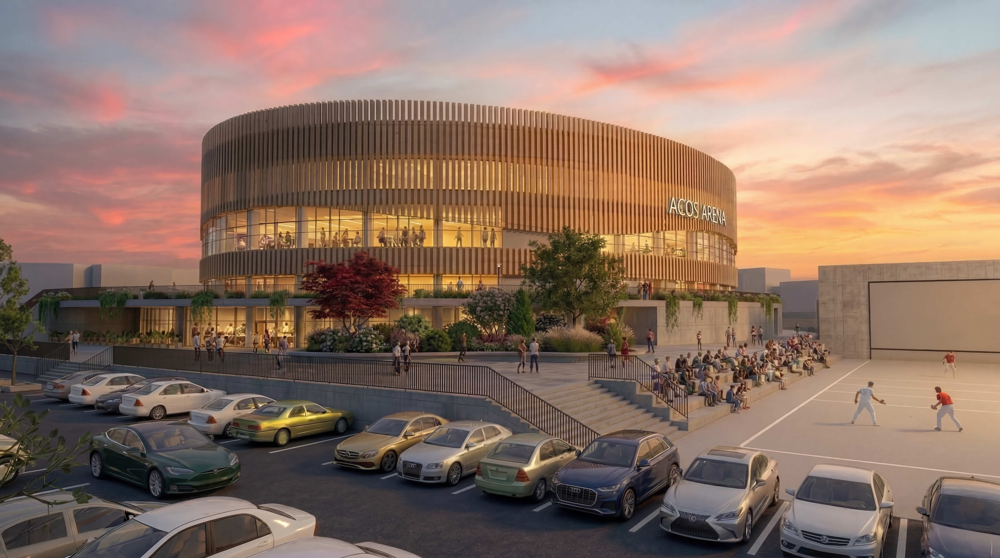
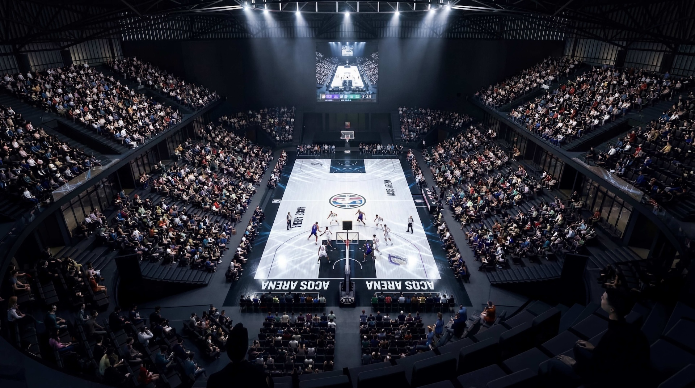
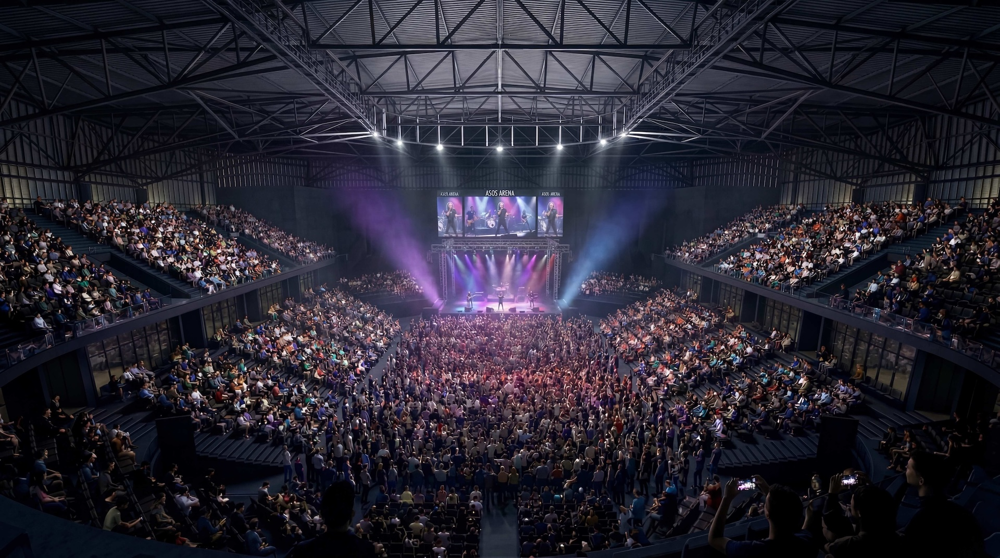

Projet académique TFG — Dax, Landes
Projet académique TFG — Dax, Landes
Description
Projet de création d'une salle multi-usage pour la ville de Dax — un équipement polyvalent capable d'accueillir concerts, spectacles et événements sportifs (basketball, handball). La ville de Dax ne dispose aujourd'hui d'aucune salle capable d'accueillir de tels événements à cette échelle.
Situé face aux arènes, sur le terrain de l'ancien Jaï Alaï, le projet comprend une salle principale de 3 200 à 3 500 places avec scène modulable, loges artistes et sportifs, écran géant et vestiaires. Des espaces publics viennent compléter le programme : restaurant, pop-up store, parking souterrain, bureaux et salles polyvalentes à louer.
L'enveloppe en bois sombre, le volume circulaire et la transparence de la façade intermédiaire donnent à l'édifice une identité forte, ancrée dans les matériaux du territoire. En septembre 2025, la ville de Grand Dax a lancé un concours d'architecture pour une salle de 3 400 places sur ce même site — validant le diagnostic établi en 2022.
Projet de fin de grade (TFG) — Université du Pays Basque UPV/EHU. Tuteur : Jose Antonio Barea.


